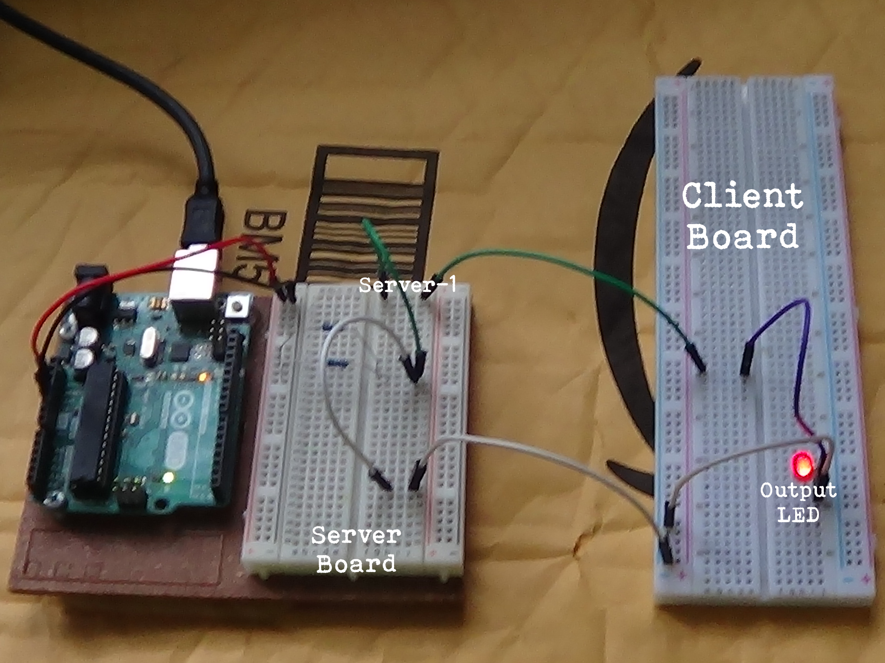
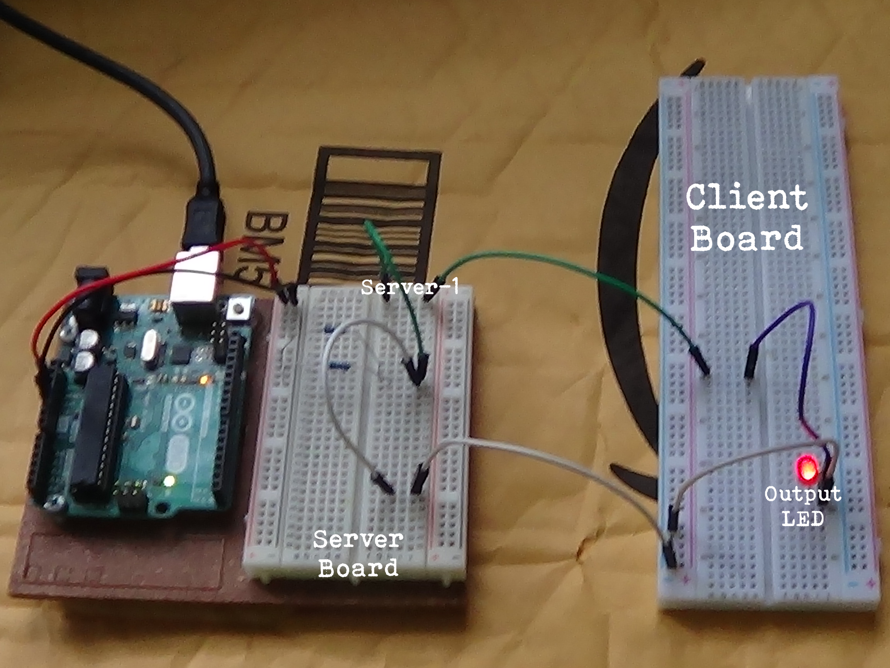

Quick Note: When I mention UNO, I am not referring to the Arduino UNO board. That's different!
Update logs
Alpha 1.2 - See Here
Alpha 1.1 - See here
About UNO
Uno stands for "Unified Networking Online". I plan to change the name eventually!
The premise of it is that there is multiple 'client' boards that are wired to a
'server' board. The manager (being person) of the server can change the output
from ON to OFF. I'm not good at explaining so here's some portable network graphics
of the ALPHA version.
 
Copyright 2020 Honest Productions

Copyright 2020 Honest Productions